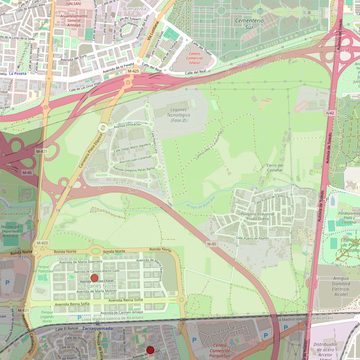

San Isidro Labrador
- Arciprestazgo
- Leganés
- Población
- Leganés
- Dirección postal
- c/ Rosa Chacel, 15
- Código postal
- 28919
- Extensión
- 6,36 km² (636 ha)
- Teléfono
- 918 842 320
- Correo electrónico
- sanisidrolabrador-leganes@diocesisgetafe.es
- Información demográfica
- De la parroquia · De la población (Leganés) · Del arciprestazgo (Leganés)


Descargar mapaLímites según decreto
"Partiendo de la confluencia de la carretera Leganés-Carabanchel con el ferrocarril Madrid-Cáceres, continúa por el eje de dicha carretera, en dirección Norte, hasta el término municipal de Madrid; siguiendo por dichos términos en dirección noreste; continúa por los límites de los términos municipales de Leganés y Madrid, hasta encontrarse con el ferrocarril Madrid-Cáceres, volviendo por el eje del ferrocarril en dirección oeste hasta la carretera Leganés-Carabanchel, punto de partida" (Decreto de erección del 29-10-97)
Desarrollos urbanísticos previstos
- Leganés: sector PP-4 «Puerta de Fuenlabrada»: 852 viviendas · en obras o en venta · el 3,8 % de su superficie está en esta parroquia
Las cifras y sus fuentes están en la ficha de cada desarrollo, en la sección «Previsión de desarrollos urbanísticos».